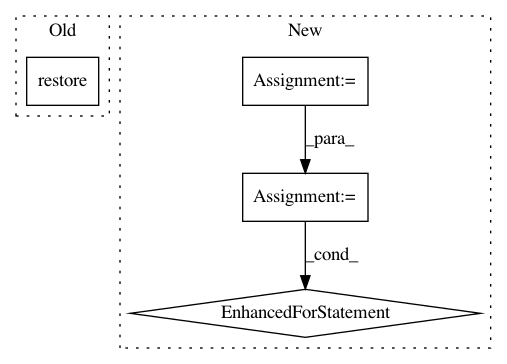

4b5b11dfd79fdf0dd0fb268808f3efcbeb9e0021,server.py,ServerWorker,run,#ServerWorker#,52
Before Change
worker = self.context.socket(zmq.DEALER)
worker.connect("inproc://backend")
model = build_model(self.args)
model.restore()
while True:
ident, msg = worker.recv_multipart()
start_t = time.time()
msg = pickle.loads(msg)
After Change
msg = pickle.loads(msg)
if self.is_valid_input(msg):
features = convert_lst_to_features(msg, self.max_seq_len, self.tokenizer)
input_fn = input_fn_builder(features, self.max_seq_len, self.batch_size)
result = []
for r in Estimator(self.model_fn).predict(input_fn):
result.append([round(float(x), 8) for x in r["pooled"].flat])
worker.send_multipart([ident, pickle.dumps(result)])
logger.info("worker %d: encoding %d strings in %.4fs speed: %d/s" % (self.id,
len(msg), time.time() - start_t,
int(len(msg) / (
In pattern: SUPERPATTERN
Frequency: 3
Non-data size: 4
Instances
Project Name: hanxiao/bert-as-service
Commit Name: 4b5b11dfd79fdf0dd0fb268808f3efcbeb9e0021
Time: 2018-11-08
Author: hanhxiao@tencent.com
File Name: server.py
Class Name: ServerWorker
Method Name: run
Project Name: deepchem/deepchem
Commit Name: c96af58e6ab2f85626e51a331e8479da49329f0e
Time: 2017-01-18
Author: joegomes@stanford.edu
File Name: deepchem/models/tensorflow_models/__init__.py
Class Name: TensorflowClassifier
Method Name: predict_proba_on_batch
Project Name: michaelhush/M-LOOP
Commit Name: a334cd6f04461ca8d57f35f0ebde68f5520fd689
Time: 2020-06-15
Author: zakven@mit.edu
File Name: mloop/neuralnet.py
Class Name: SingleNeuralNet
Method Name: load